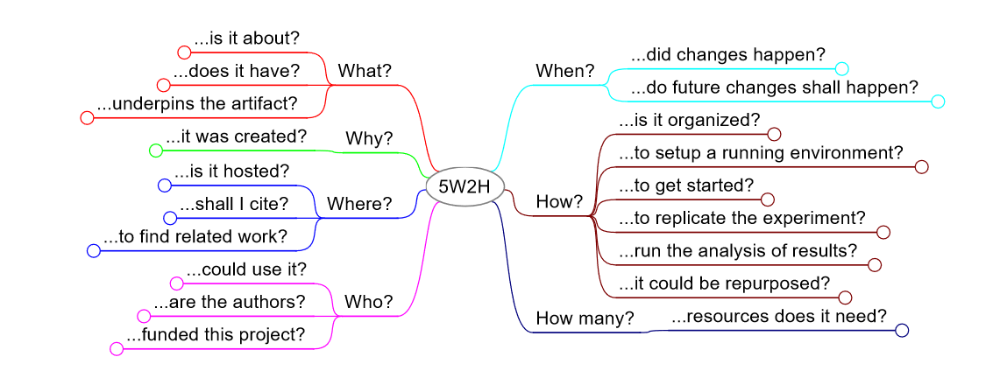

The factual questions

The list of research best practices
What?
What is it all about?
- The artifact shall have a name for reference
- The artifact shall indicate its context of development (e.g., domain, problem, project)
- The artifact shall indicate the main functionalities supported (e.g., language support, code generation, model analysis)
- The artifact shall indicate the relation with its respective paper
What does it have?
- The artifact shall provide an overall description of its directory structure and content
- The artifact shall include everything required for replications (i.e., complete)
- The artifact shall include no more assets than necessary for replications (i.e., concise)
- The artifact shall include a preprint of its associated article
What concepts and technologies underpin the artifact?
- The artifact shall indicate the theories that underpin its creation (e.g., formalisms, semantics)
- The artifact shall indicate the modeling languages used to develop it (e.g., UML, xtUML, SysML, BPMN)
- The artifact shall indicate the meta-modeling languages used to develop it (e.g., EMOF, CMOF, ECore/EMF, KM3)
- The artifact shall indicate the standards and/or specifications used to develop it (e.g., ISO, CMI, XMI, CWM, HUTN, JMI, DD, OCL)
- The artifact shall indicate the programming/markup language used to develop it
- The artifact shall indicate the libraries, dependencies, and frameworks used to develop it and their respective versions (e.g., Eclipse release)
- The artifact shall rely on open, well-maintained, and documented libraries or dependencies
Why?
Why it was created?
- The artifact shall report the motivation for its development
- The artifact shall report its objective/goal (e.g., verify claims, replicability, reusability, a whole new library/framework)
- The artifact shall indicate its advantages and/or novelty (e.g., algorithm, language, method)
Where?
Where is it hosted?
- The artifact shall be hosted in an open, public repository (e.g., GitHub, BitBucket, Zenodo, Figshare)
- The artifact shall be hosted in a repository indexed and findable by search engines (e.g., GitHub, BitBucket, Zenodo, Figshare)
- The artifact shall be archived for long-term, permanent access (e.g., Zenodo, Figshare)
Where shall I cite?
- The artifact shall provide an explicit format for citation (e.g., in a CITATION or README file)
- The artifact shall provide citation information in a BibTeX format
- The artifact shall provide an URL for citation
- The artifact shall provide a DOI for citation
Where to find related work?
- The artifact shall give credit to data obtained from other sources (e.g., authors, paper, repository, benchmark)
- The artifact shall provide references about key concepts (e.g., papers, surveys, wiki, reports)
- The artifact shall provide references to studies using it (e.g., known uses, integrated with)
- The artifact shall provide references to related projects
- The artifact shall provide references using in-code citation (e.g., code header)
Who?
Who could use it?
- The artifact shall be deposited under an explicit open license (e.g., reported in a LICENSE file)
- Files shall be made available using open/non-proprietary formats (e.g., JSON, open XML schema)
- The artifact shall indicate a list of potential users (e.g., professionals, researchers, industry sectors)
- The artifact shall provide a communication channel for interacting with the community (e.g., forum, mailing list, issue tracker, IRC, Slack, Discord)
- The artifact shall indicate the names of its authors
- The artifact shall indicate the institution of its authors
- The artifact shall indicate the contact details of its authors/collaborators (e.g., email address, ResearchGate, Linkedin, website)
- The artifact shall indicate the ORCID of its authors/collaborators
- The artifact shall indicate the level of experience of its authors/collaborators (e.g., bio, degree, position)
- The artifact shall indicate the funding agencies that supported the project (e.g., ERC, NWO, CNPq, DFG, EPSRC, NSF)
When?
When did changes happen?
- Changes to the artifact shall be tracked using version control (e.g., GitHub, GitLab, BitBucket)
- Changes to the artifact shall be small (e.g., conciseness, cohesion, clear edit)
- Changes to the artifact shall be explained (e.g., CHANGELOG, commit messages)
- The artifact shall allow referencing or retrieving specific versions using tags and/or release identifiers
When do future changes shall happen?
- The artifact shall provide a timeline for future goals and planned updates (e.g., frequency, next steps, future work plans)
- The artifact shall be open for change requests and receiving feedback from users (e.g., bug fixes, pull requests, collaboration)
How?
How is it organized?
- Tabular data files shall follow analysis-friendly formats (e.g., the column is variable, the row is observation, data dictionary, the meaning of column/row headers)
- Files and folders shall have self-explaining names matching content, meaning, and human abstractions (e.g., doc/, src/, results/, src/, bin/)
- The artifact shall indicate best practices used (e.g., naming or code conventions, guidelines/checklists)
- Useful metadata shall be used as part of filenames for pattern matching (e.g., yyyymmdd), where meaningful
- The artifact shall be compliant with ICT accessibility standards (e.g., Section 508, WAI)
- The experiment workflow shall be broken-down into small and simple procedures to facilitate reuse (e.g., scripts, functions)
- The artifact shall include a website or wiki-page
How to set up a running environment?
- The artifact shall provide instructions for downloading
- The artifact shall provide the open-source code
- The artifact shall provide a binary/compiled version
- The artifact shall provide a container for freezing dependencies and quickly setting up a running environment (e.g., VM, Docker)
- The artifact shall provide a step-by-step tutorial of how to build the source code
- The artifact compilation shall rely on build automation tools (e.g., make, ant)
- The artifact compilation shall rely on dependency management tools (e.g., maven, pip)
- The artifact shall provide instructions to install it
How to get started?
- The artifact shall include instructions for running it on minimal test data (e.g., quick run, smoke testing)
- The artifact shall indicate the most relevant and interesting parts of the source code/artifact
- The artifact shall include step-by-step instructions for running it (e.g., README, PDF)
- The artifact shall include a video tutorial with the step-by-step for running it (e.g., Youtube, Vimeo)
How to replicate the experiment?
- The artifact shall include the complete set of test models analyzed
- The artifact shall provide instructions for manual/automated pre-processing of raw data for experiments (e.g., bash, python, R script)
- The artifact shall provide instructions for manual/automated replication of the complete (or at least a subset) experiment as in the paper (e.g., bash, python, R script)
- The experiment workflow shall be fully automated (including raw data processing, experiment execution, figures plotting)
- The artifact shall include the experiment results shown in its associated paper in tabular and machine-readable format (e.g., .csv, .tab)
- The artifact shall include log files produced
How to run the analysis of results?
- The artifact shall include scripts for the automated analysis of results as in the paper (e.g., R scripts, python scripts, Jupyter notebooks)
- The artifact shall include scripts for drawing figures and/or plots as in the paper (e.g., R scripts, python scripts, Jupyter notebooks)
- The artifact shall provide a clear description of the measurement procedures and metrics used in the paper
How could it be repurposed?
- The artifact shall indicate suggestions for contributions (e.g., notes.txt, todo.txt, ways it could be repurposed, wishlist)
- The artifact documentation shall be designed considering users with minimal expertise
- The artifact shall provide details about ethical concerns in replications
- The artifact source code shall be documented (e.g., in-code comments, Javadoc)
- The artifact shall provide instructions for integration/chaining with commercial tools (e.g., Matlab, DOORS)
- The artifact shall report known issues, bugs, and limitations (e.g., issue tracker)
How much/many?
How many resources does it need?
- The artifact shall indicate the system and environment where it was successfully evaluated (e.g., OS, CPU, RAM, GPU, Disk)
- The artifact shall indicate the minimum system and environment requirements for usage (e.g., OS, CPU, RAM, GPU, Disk)
- The artifact shall indicate the skills and/or settings required for usage (e.g., team configuration, users' skills)
- The artifact shall indicate the approximate amount of time needed to replicate the experiment